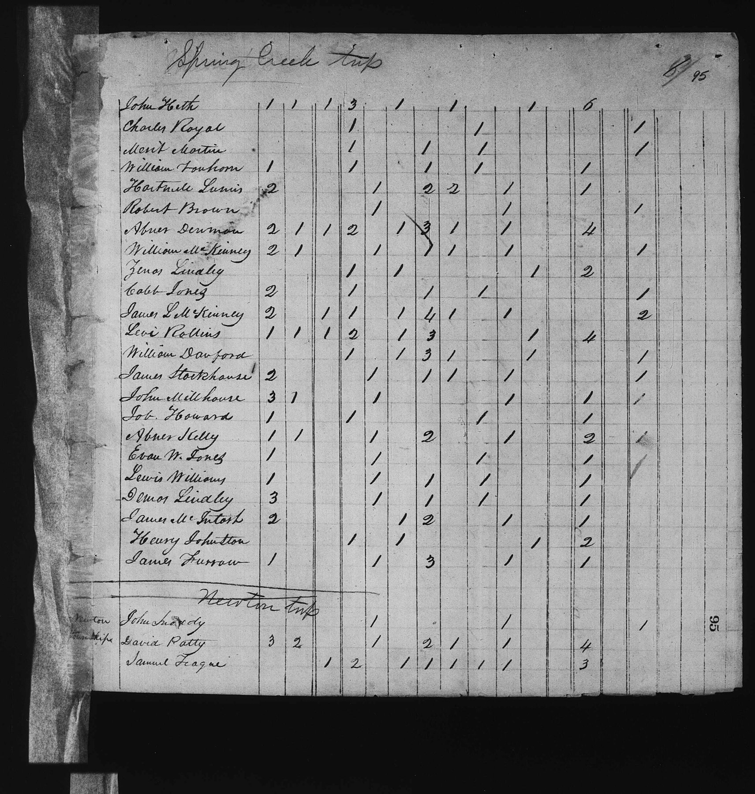
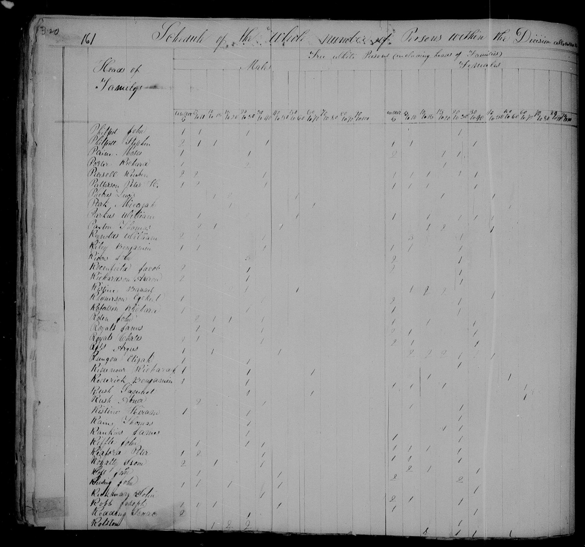
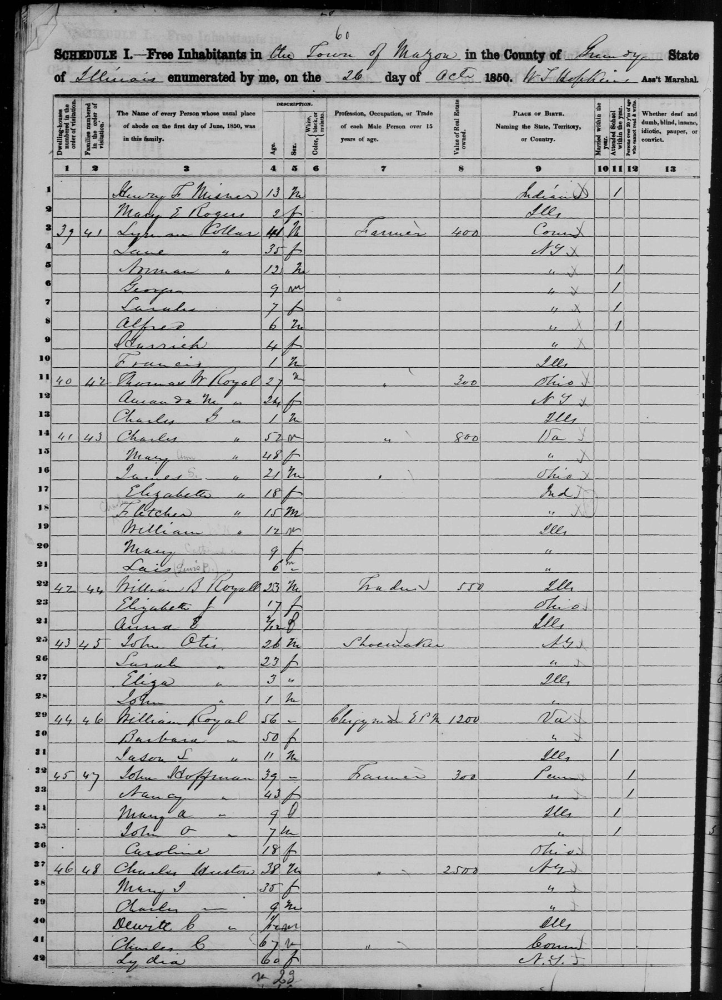

Mary Ann Gearhart 1802–1888
Peter's 3× great-grandmother by adoption.
Mary Ann Gearhart was born on 2 Jul 1802 in Lexington, Rockbridge, VA (according to an online family tree)1. She married Charles Royal on 12 Mar 1819 in Piqua, Ohio, United States (according to an online family tree)8. She died on 25 Dec 1888 in Portland, Multnomah County, Oregon, United States (according to an online family tree)1.
Family
- Husband
- Charles Royal 1798–1878 · married on 12 Mar 1819 in Piqua, Ohio, United States8
- Children
- Mary Catharine Royal 1842–1928 tradition
Life events
| Event | Date | Place and details |
|---|---|---|
| Born | 2 Jul 1802 | Lexington, Rockbridge, VA According to an online family tree1 |
| Married | 12 Mar 1819 | with Charles Royal Piqua, Ohio, United States According to an online family tree8 |
| Lived | 1820 | Springcreek, Ohio, United States2,3 |
| Married | 14 Mar 1820 | with Charles Royal Ohio, United States9 |
| Lived | 1830 | Fountain County, United States4 |
| Lived | 25 Jan 1842 | Fox River, United States According to an online family tree5 |
| Lived | 26 Oct 1850 | Mazon, United States6,7 |
| Lived | 1860 | Sandy Precinct, Portland, Multnomah County, Oregon, United States According to an online family tree1 |
| Lived | 1870 | Albany, Oregon, United States According to an online family tree1 |
| Lived | 1880 | Sheridan, Oregon, United States According to an online family tree1 |
| Died | 25 Dec 1888 | Portland, Multnomah County, Oregon, United States According to an online family tree1 |
Records



Sources
- FamilySearch Family Tree: Mary Ann Gearhart (KLBC-135).
- 1820 US Census, Spring Creek Township, Miami County, Ohio, folio 95, line 2.
Spring Creek Twp | 95 | Line 2: Charles Royal | [Free White Males 16–26:] 1 | [Free White Females 16–26:] 1 | [Manufactures:] 1
Inferred from her husband Charles Royal's 1820 US Census entry in Spring Creek Township, Miami County, Ohio (folio 95, line 2), which enumerates 1 free white male aged 16–26 (Charles Royal, age 22) and 1 free white female aged 16–26 (Mary Ann Gearhart, born 1804, age 16, married in 1820), with no children and 1 person engaged in manufactures.
- 1820 US Census, Spring Creek Township, Miami County, Ohio, folio 95, line 2.
Charles Royal: Census 1820 @ Springcreek Township, Miami, Ohio, United States
Married Charles Royal (as Polly Gearhart, XD7X-D8M) in Miami County, Ohio on 14 March 1820 and lived as an unnamed female in his household in Springcreek Township, Miami County, Ohio in the 1820 US census through the birth of their son James S. Royal in Ohio in 1829 (per the 1850 census M85T-M9V).
- 1830 US Census, Fountain County, Indiana, p. 161, line 19.
Cales Royals: Census 1830 @ Fountain, Indiana, United States
Lived as an unnamed female in her husband Charles ('Cales') Royal's household in Fountain County, Indiana in the 1830 US census and remained in Indiana through the births of daughter Elizabeth (1832) and son Charles Fletcher Royal (1834/1835).
- FamilySearch Family Tree: Mary Catharine Royal (LR3M-1HS).
Mary Catharine Royal (LR3M-1HS): Birth 25 January 1842 @ Fox River, LaSalle, Illinois, United States … William McKindsie Royal: Birth 3 Sep 1837 @ Chicago, Illinois; ParentChild: Charles Royal, Mary Elizabeth Earhart
Moved with her husband Charles Royal to northern Illinois by 3 September 1837 (when son William McKindsie Royal was born in Chicago, Illinois per HV4G-B2T2) and gave birth to daughter Mary Catharine Royal on 25 January 1842 in Fox River, LaSalle County, Illinois (per FamilySearch tree LR3M-1HS).
- 1850 US Census, Town of Mazon, Grundy County, Illinois, p. 60, Dwelling 41, Family 43, lines 14–21.
SCHEDULE I.—Free Inhabitants in the Town of Mazon in the County of Grundy State of Illinois enumerated by me, on the 26 day of Oct 1850. W. T. Hopkins Ass't Marshal. | 41 | 43 | Charles " [Royal] | 52 | M | " [Farmer] | 800 | Va / Mary [Ann] " | 48 | F | " [Va] / James [S.] " | 21 | M | ' [Farmer] | Ohio / Elizabeth " | 18 | F | Ind / [Charles] Fletcher " | 15 | M | " [Ind] / William " | 12 | M | Ills / Mary [Catherine] " | 9 | F | " [Ills] / Lais [(Lewis B.)] " | 6 | M | " [Ills]
1850 US Census (enumerated 26 October 1850 by W. T. Hopkins, Ass't Marshal, Town of Mazon, Grundy County, Illinois, p. 60, Dwelling 41, Family 43, lines 14–21): Mary [pencil: Ann] Royal, age 48, female, born Virginia, with husband Charles Royal (age 52, Farmer, real estate $800, born Virginia) and children James [S.] (21, Farmer, born Ohio), Elizabeth (18, born Indiana), [Charles] Fletcher (15, born Indiana), William (12, born Illinois), Mary [Catherine] (9, born Illinois), and Lais [(Lewis B.)] (6, born Illinois), immediately next door to married eldest son Thomas F. Royal (27, Farmer, $300, born Ohio) at Dwelling 40, Family 42 (lines 11–13) and three doors from Charles's brother William Royal (56, Clergyman EPM, $1,200, born Virginia) at Dwelling 44, Family 46 (lines 29–31).
- 1850 US Census, Town of Mazon, Grundy County, Illinois, p. 60, Dwelling 41, Family 43, lines 14–21.
Mary Ann Royal: Race = White; Birth 1802 @ Virginia; Census 1850 @ Mazon, Grundy, Illinois, United States; Age=48y
1850 US census, Mazon, Grundy County, Illinois: Mary Ann Royal, age 48, born Virginia, in the household of Charles Royal (52) with children James S. (21, b. OH), Elizabeth (18, b. IN), Charles Fletcher (15, b. IN), William (12, b. IL), Mary Catherine (9, b. IL), and Lewis B. (6, b. IL).
- FamilySearch Family Tree: Charles Royal (LHKT-Y2F).
- Marriage of Charles Royal and Polly Gearhart, 14 Mar 1820, Miami, Ohio.
Charles Royal & Polly Gearhart: Marriage 14 Mar 1820 @ Miami, Ohio, United States
Ohio county marriage records record the marriage of Charles Royal and Polly [Mary Ann] Gearhart on 14 March 1820 in Miami County, Ohio (whereas the FamilySearch tree gives 12 March 1819 at Piqua, Miami County, Ohio).